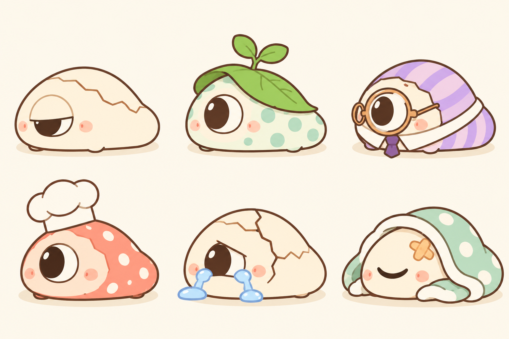
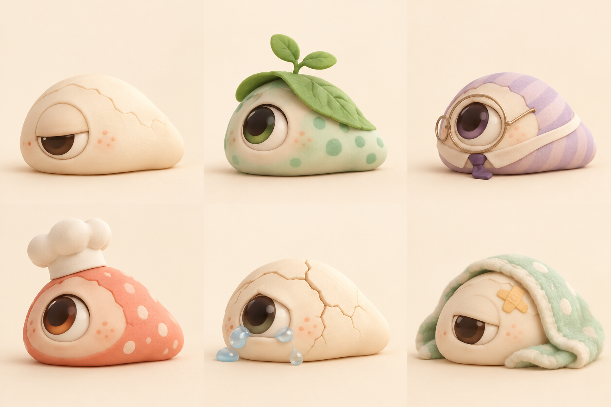

A little world is waking up.
Quiet mode slows wandering and pauses spontaneous messages. Your friends never need rescuing because you were away.
For a floating companion, build the macOS desktop app.


AI-generated concept sheets, preserved as art experiments. The interactive characters use separate editable SVG illustrations.